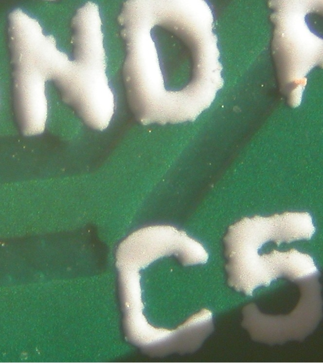

This is my first post so I’ll start by saying hi and thanks to everyone for all the useful info I’ve gleamed from this site and for all the effort that so many people have put into this project.
The reason for posting is that I received an emonTx kit this morning and built it without any issues but as soon as attached power it shorted out the 5V from my USB adaptor. It took me quite a while to discover the problem, as I naturally assumed I’d got a whisker of solder somewhere, but I eventually found this (look carefully at the top of the “C”)....

I thought it best to let everyone know in case there’s a faulty batch of PCBs.
Also, in the process of tracking this down I noticed that the PCB isn’t quite wired as per the circuit diagram. The 5V feed to SJ1 is wired to R9 at the centre of SJ2 rather directly to the 5V PWR line as shown in the circuit diagram. This isn’t an issue in the default state but it means than you can’t set SJ2 to 3V and SJ1 to 5V.
Sorry to start on a negative note but hopefully future posts will be on more interesting stuff.
-martin
Re: Fault tx PCB
Hi Martin,
Very sorry to hear that you have received a faulty board. Good job locating the issue, we will check to see if any boards we have in stock are also effected. To my knowledge this is the first faulty board we've had to date.
We will certainly send you another (defect free!) board Have you started assembling it? If not, maybe you could be so kind as to send the faulty board back to us. I will take it up with the manufacturer. The boards should have all been bare board tested in the factory, but I'm not sure as to how comprehensive this test is.
As for the issue with JR1 I believe the diagram shows that the middle pad is connected to neither PWR (5V normally) or VCC (3.3v), this is to give a choice between 5v or 3.3V by connecting the middle pad to either the left or right pad with solder.
We will dispatch you a replacement board tomorrow.
All the best,
Re: Fault tx PCB
Thanks for the reply Glyn.
Unfortunately I didn’t find the problem until I’d nearly completed assembly so I just scraped the rouge bit of track away and finished building. There’s no real need to send me another board (although I will definitely make use of it if you do :) ) as I’m up and running now.
I agree that JR1 (SJ1?) should be connected as you describe but it’s actually connected between 3V and the centre contact of SJ2 (which is 5V with the default link in but would be 3V if you strapped SJ2 the other way).
all the best,
Martin